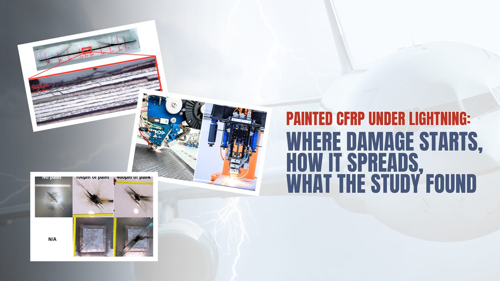
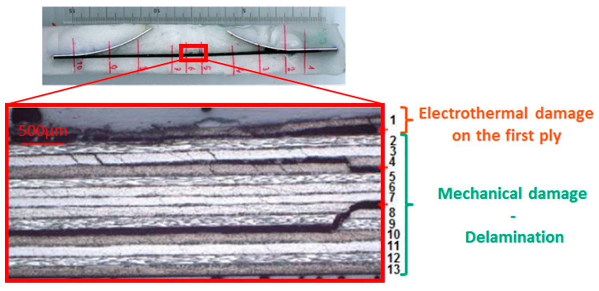
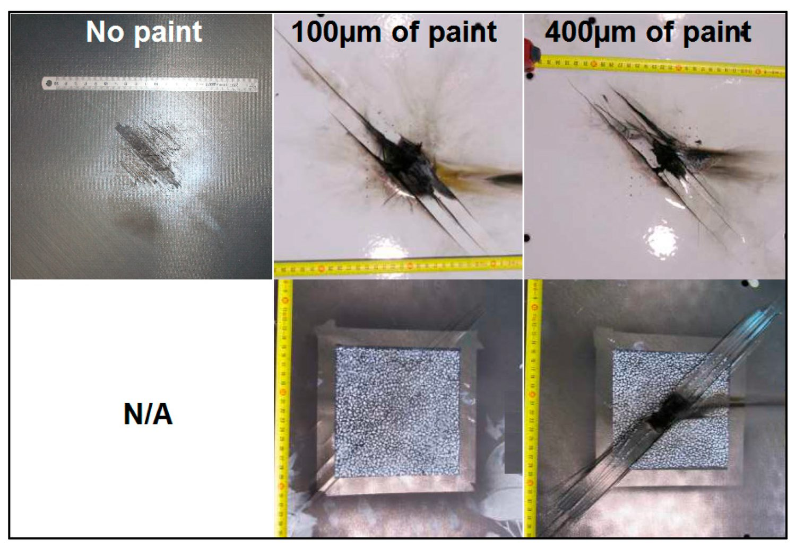
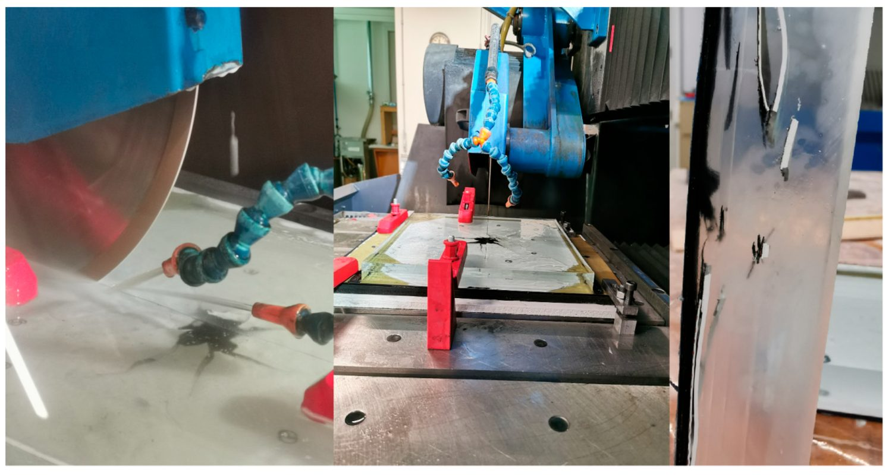
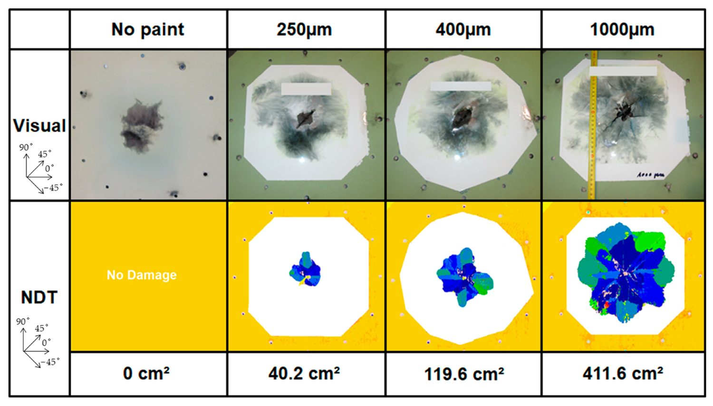
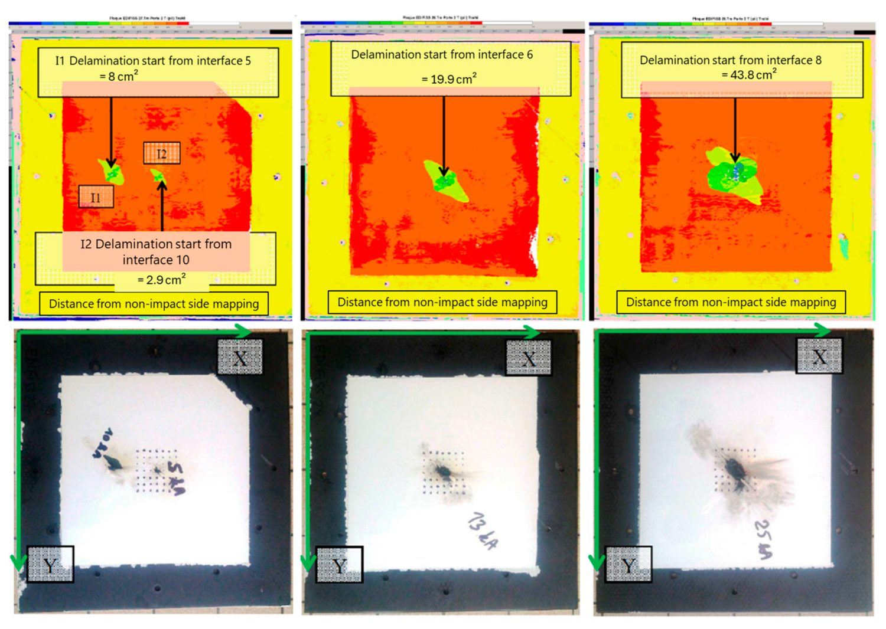
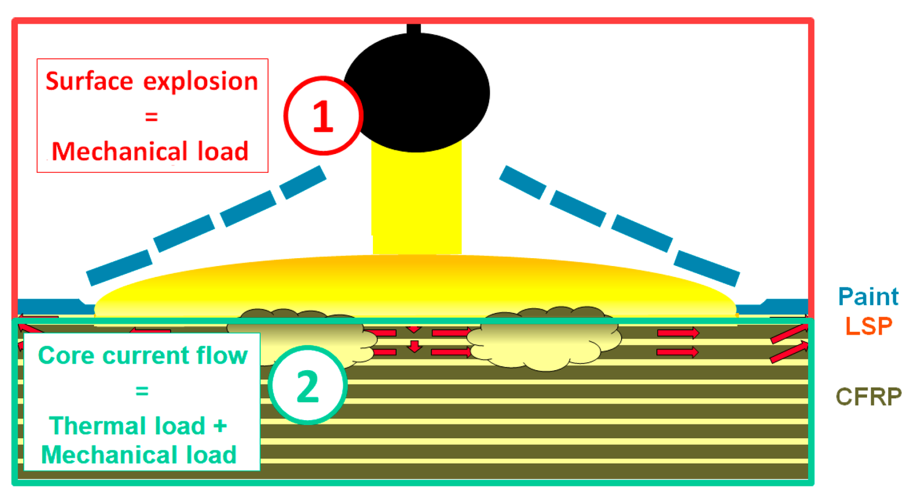
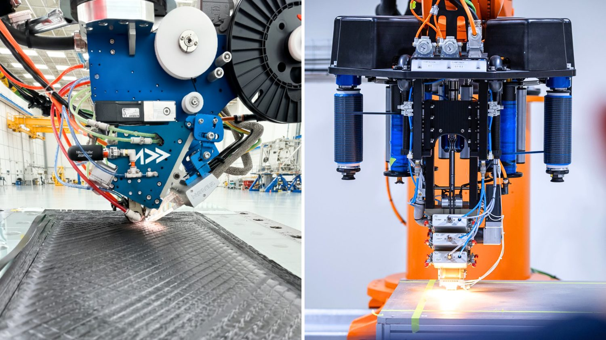

Lightning Hits Every Airliner About Once a Year: What Really Happens Inside a Painted CFRP Panel When It Does

Every commercial aircraft in service can expect to be struck by lightning roughly once a year, and by some counts once or twice. Airbus's own flight-safety team states plainly that each in-service aircraft is hit at least annually on average. Most of those strikes end with an inspection and a return to service. But the panel that absorbs the bolt is rarely the clean, bare laminate that shows up in a lab. It is a carbon-fibre skin wrapped in a metallic protection layer and then coated in paint, and that paint turns out to change the outcome in a way that is easy to underestimate.
A study published in May 2025 in the MDPI journal Aerospace set out to measure exactly that. Audrey Bigand, Christine Espinosa and Jean-Marc Bauchire ran destructive and non-destructive analysis on protected and painted CFRP aircraft laminates and asked a question most lightning research skips: once you account for the paint that always sits on a real aircraft, how does the damage inside the composite actually change?
This post walks through what the paper found, why the paint matters more than its “cosmetic” reputation suggests, and what it means for anyone manufacturing the CFRP skins that eventually get painted, certified and flown. Throughout, we keep a clear line between what the paper reports and where we at Addcomposites add our own commentary.
Why Carbon Fibre Has a Lightning Problem in the First Place
From the paper: aluminium airframes shrug off lightning because metal conducts the enormous transient current away across the whole structure. Carbon fibre cannot do this nearly as well. The authors note that a carbon fibre conducts current on the order of a thousand times more poorly than metal, and the through-thickness and in-plane transverse conduction is worse still because the surrounding epoxy is an insulator. When a bolt delivers tens of thousands of amps into a material that resists it, the energy has nowhere gentle to go, and it converts to heat right where it enters.
That heating drives two distinct families of damage, and keeping them separate is central to the whole paper:
- Thermal damage — resin breaking down (pyrolysis) and fibres snapping or vaporising. The paper points out that epoxy pyrolyses somewhere around 300–600 K, while the arc environment can reach on the order of 30,000 K, so the resin is destroyed far past its limit near the strike point.
- Mechanical damage — delamination, meaning the plies separate at their interfaces. The authors are explicit that the separated interfaces they cut into carried no scorching or thermal signature whatsoever, which is why they treat delamination as a purely mechanical outcome rather than a thermal one.

A polished cross-section through the strike centre of the 13-ply laminate: the burnt, disrupted top ply is the electrothermal (heat) damage, while the long horizontal splits running between the plies below it are the mechanical delamination. Figure 4 from Bigand, A.; Espinosa, C.; Bauchire, J.-M. “Destructive and Non-Destructive Analysis of Lightning-Induced Damage in Protected and Painted Composite Aircraft Laminates.” Aerospace 2025, 12, 446. https://doi.org/10.3390/aerospace12050446 — © 2025 by the authors. Licensed under CC BY 4.0.
This two-part split is the mental model worth carrying into any conversation about lightning and composites. Heat damages the surface and the first ply or two. Shock separates the plies deep inside. They come from the same event but behave differently, and, as the paper shows, paint pushes on both.
The Two Damage Sources, and How the Strike Gets Decomposed
From the paper: to make sense of a genuinely messy event, the authors break the loading into two contributions. First, a surface explosion: the metallic protection layer and the paint above it flash into vapour, producing a fast pressure shock that lands on the top of the laminate. Second, a core current flow: whatever current penetrates the plies heats them resistively, a thermal load, and the resin it boils off can act as a second, weaker mechanical push. The paper is careful to say this second mechanical push is slower and small compared with the surface explosion.
Crucially, the surface blast lands in the opening microseconds of the strike, before peak current is even reached. That timing is why the authors identify it as the dominant driver of delamination. Here is the layered picture the paper works with, built from its specimen description and its damage-source decomposition:
Bigand et al. · Aerospace 2025 · specimen & load decomposition
How the strike loads the laminate
A ~100 kA Waveform D arc (action integral ~250 kA²·s) hits the coated top face. Two loads follow: a fast surface explosion and a slower core current flow.
Tap a load below to spotlight the layers it acts on.
Schematic by Addcomposites, built from the specimen and damage-source description in Bigand et al., Aerospace 2025, 12, 446.
The elegance of the paper's framing is that it lets you ask, cleanly, “if I neglect the core current entirely and treat the strike as a pressure load on the surface, how wrong am I?” Much of the results section is really an effort to justify exactly that simplification for normal aircraft configurations, and to find where it breaks.
The Variable Almost Everyone Leaves Out: Paint
From the paper: the authors argue that paint is usually written off as decoration plus an insulating skin, structurally irrelevant, and that this is a mistake. Because lightning damage depends so heavily on how the arc interacts with the surface, a coating that sits directly in that interaction cannot be neutral. They describe two mechanisms by which paint makes things worse:
- Confinement (mechanical). When the protection layer explodes, the expanding metallic gas and pyrolysis products want to vent into the air. Paint on top gets in the way, holding the pressure down against the laminate for longer. Earlier work cited in the paper modelled this as a simple inertial mass effect, where only the paint's density and thickness matter. The authors accept that but argue it is incomplete.
- Arc constraint (electrothermal). This is the paper's proposed addition. Paint that survives the first instants of the strike prevents the arc root from spreading sideways. Bottled up like that, the arc stays narrow and forces more current downward into the composite than it otherwise would. So the paint does not merely trap the blast; it changes where the current goes.
The authors also flag, from Airbus internal investigation, that on a bare panel the harm barely leaves the entry point and top ply, whereas layering paint over it drives the damage deeper, occasionally punching clean through.

Unprotected composite panels struck with increasing paint thickness, shown front (top row) and back (bottom row): with no paint the damage is a small surface mark, but at 100 µm and then 400 µm it grows dramatically, ending in a clean puncture punched right through the panel. Figure 2 from Bigand et al., Aerospace 2025, 12, 446. https://doi.org/10.3390/aerospace12050446 — © 2025 by the authors. CC BY 4.0.
The counterintuitive takeaway is that a layer added for appearance and environmental protection can be the difference between a scorch mark and a hole. That reframes paint thickness as an engineering parameter, not a finishing detail.
How They Tested It
From the paper: the specimens were flat 450 mm × 450 mm plates, each built from 13 carbon/epoxy plies of 127 µm (IMA/M21E from Hexcel, laid up and fabricated by Airbus), for a total thickness of 1.651 mm, in a symmetric stacking sequence. The top face carried an ECF195 expanded copper foil protection layer (Dexmet, now PPG) and polyurethane paint, and took the strike. The bottom face stayed bare, and its motion during the strike was tracked by Digital Image Correlation.
The strikes used the standardised Waveform D: about 100 kA peak, with a prescribed action integral near 250 kA²·s. They were generated on the EMMA facility, a one-off prototype generator operated at DGA-Ta, with the arc leaping a 50 mm gap from the electrode to a panel clamped into a 370 mm frame by twelve fasteners. The configurations selected for the analysis map cleanly onto the questions being asked:
Bigand et al. · Aerospace 2025 · Table 1 (redrawn)
The seven test configurations
Each row isolates one question — how paint confinement, or how much current diving in with no protection, changes the damage.
Configuration summary, redrawn by Addcomposites from Table 1 in Bigand et al., Aerospace 2025, 12, 446.
The measurement approach is what the paper's title refers to. First, a C-Scan ultrasonic Non-Destructive Test mapped the delamination. But the probe had to sit at the bare bottom face, because the copper mesh on top interferes with the echo. That geometry has a consequence the authors are candid about: a large delamination near the bottom face casts an acoustic shadow over smaller delaminations closer to the top, so those shallow ones are under-read or missed entirely.
Bigand et al. · Aerospace 2025 · NDT limitation · interactive
Why a bottom-view C-Scan under-reads the damage
The echo returns from the nearest, largest delamination first; shallower interfaces sit behind it acoustically. Switch the view to see what a single bottom-up scan misses.
Explanation by Addcomposites of the C-Scan limitation described in Bigand et al., Aerospace 2025.
To get past that, the team froze each damaged plate in a poured polyester resin block, then sliced it into strips (a 2.2 mm blade forced a minimum 14 mm pitch between cuts), polished the faces, measured delamination at every interface under an optical microscope to 0.5 mm precision, and reconstructed the full 3D distribution in a custom Matlab routine. That destructive step is what makes the hidden delamination visible.

The destructive method in action: the resin-frozen panel being sliced on the saw, and a finished strip with the internal damage locked in the resin block — the panel's residual curve from the strike is still visible. Figure 9 from Bigand et al., Aerospace 2025, 12, 446. https://doi.org/10.3390/aerospace12050446 — © 2025 by the authors. CC BY 4.0.
This dual method is a quiet but important reminder for anyone who relies on a single NDT top-view map to judge a lightning event. The paper demonstrates concretely that the ultrasonic picture, taken alone, can understate how many interfaces have actually separated.
The Headline Result: Paint Thickness Versus Delamination
From the paper: for an identical build (ECF195 protection over 1.6 mm of CFRP, struck by a full 100 kA D-wave), the only thing changed between panels was paint thickness. The total projected delaminated area from the C-Scan came out as follows:
Bigand et al. · Aerospace 2025 · Figure 18 data · interactive
Slide the paint thickness. Watch the delamination grow.
ECF195 + 100 kA D-wave, 1.6 mm CFRP, NDT projected area. Same build every time — only the coating changed. The four measured points are marked; values between them are interpolated.
The four measured panels
Plotted by Addcomposites from the delaminated-area values reported in Figure 18 of Bigand et al., Aerospace 2025, 12, 446.

The same protected laminate struck at four paint thicknesses, with visual photos (top) and NDT delamination maps (bottom): the delaminated area climbs from zero with no paint to 40.2, 119.6 and 411.6 cm² as the coating thickens to 1000 µm. Figure 18 from Bigand et al., Aerospace 2025, 12, 446. https://doi.org/10.3390/aerospace12050446 — © 2025 by the authors. CC BY 4.0.
The two ends of that range tell the story. With no paint at all, the foil absorbed the strike as intended: it burned off at the surface and the plies underneath came through mechanically untouched. Add a millimetre of paint over the same protection, and the delaminated area jumps past 400 cm². And the relationship is not proportional; past a certain coating depth, as the bar chart shows, the curve steepens.
The zero-versus-411 contrast is the single most quotable number in this paper. It reframes the protection layer's success as conditional on what sits above it. A protection scheme that looks flawless on a bare coupon can be undermined by the finishing coat.
Where the Damage Goes in Depth
From the paper: thickness area is only half the picture. The depth of penetration is the other half, and it behaves differently for thermal and mechanical damage. For the extreme 1000 µm configuration, the authors performed a micro-cut through the centre and read off exactly which plies had burned:
Bigand et al. · Aerospace 2025 · micro-cut depth · interactive
How deep does the burn actually reach?
Toggle between a real aircraft coat and the extreme lab case. The thermal burn depth into the 13-ply, 1.651 mm stack changes dramatically — but even at its worst it stops at ply 4.
Depth diagram by Addcomposites, from the internal-damage findings in Bigand et al., Aerospace 2025.
Even under this deliberately severe case, the thermal burn stopped at ply 4, about 508 µm into a 1.65 mm stack. The authors explain why: carbon's resistance is high enough that the current only dips in locally before rerouting back to the copper foil above, so the burn never spreads far. And at the paint thicknesses aircraft actually carry, roughly 250 to 400 µm, only the first ply burns, which is why the plate's overall stiffness is not meaningfully changed.
To probe how much current really reaches the plies, the team also struck unprotected but painted panels at 5, 13 and 25 kA (a quarter of the full wave, an amount they argue the composite is unlikely to exceed once a protection layer is present). Even the worst of these, 25 kA, produced delamination reaching only to about the sixth ply, and the topmost separation between the first two plies came from thermal stress alone. Against the protected reference struck at the full 100 kA, this unprotected-panel damage was far smaller and shallower.

Delamination in three unprotected, painted panels struck at 5, 13 and 25 kA (left to right): the coloured NDT maps on top and the panel photos below show the damage reaching deeper as current rises, while the overall affected area stays small. Figure 16 from Bigand et al., Aerospace 2025, 12, 446. https://doi.org/10.3390/aerospace12050446 — © 2025 by the authors. CC BY 4.0.
A separate glass-fibre control panel confirmed the mechanism: since the glass substrate is non-conductive, the foil eroded exactly as it would have if every amp had remained in the foil, showing that only a limited amount ever diverts into the carbon plies.
The depth findings are reassuring in one direction and cautionary in another. Reassuring, because at real paint thicknesses the heat stays shallow. Cautionary, because the same paint that keeps heat shallow is simultaneously widening the mechanical delamination underneath, which is the damage you cannot see from the outside.
Why the Surface Shock, Not the Core Current, Drives Delamination
From the paper: the authors close the loop with a Digital Image Correlation comparison. Using non-conductive glass-fibre substrates, some capped with a single carbon ply and some not, all protected and painted, they measured how the back face moved during the strike. Adding or removing that single carbon ply barely moved the back-face deflection, which led them to conclude that the composite's own explosion contributes negligibly to the mechanical load, at least while damage stays confined to the top plies.
They also point to the timing of puncture cases in the literature: when a panel is actually holed, it happens within a few microseconds, far faster than a mechanical shock could act, which pins early perforation on an electrothermal punch-through, current boring a tight hole faster than the surface blast could ever arrive.

A schematic of how the strike is broken into two loads: at the surface (1) the LSP and paint flash to vapour, creating a fast mechanical shock, while below it (2) the current diving into the plies produces a thermal load plus a weaker mechanical one. Figure 5 from Bigand et al., Aerospace 2025, 12, 446. https://doi.org/10.3390/aerospace12050446 — © 2025 by the authors. CC BY 4.0.
So the picture the paper assembles is: within normal paint thicknesses, the delamination that matters is a mechanical event, driven by the surface explosion, amplified by the paint that confines it, and migrating toward the strike face as the coating gets heavier. The core current's thermal damage is real but stays shallow and localised, and its mechanical contribution can be set aside, provided the burn does not reach deep.
Our Perspective: What This Means for Building Painted CFRP Skins
Everything in this section is Addcomposites' own analysis. The paper's authors do not address manufacturing methods, and nothing here should be read as their endorsement of any company, product or process.
At Addcomposites, we build automated fibre placement systems, the AFP-XS and AFP-X, that produce the CFRP fuselage panels, wing skins and control surfaces this research is ultimately about. Reading a study like this from the production side, a few points stand out.

The AFP-XS and AFP-X heads depositing carbon fibre tow onto aerospace panel tooling. In-situ heating and compaction at the nip point give ply-by-ply control over orientation and over where any conductive or protective layer lands in the stack.
First, lightning protection performance is a whole-stack property. This paper is a clean demonstration that the same laminate and the same protection layer can give wildly different outcomes depending on what sits on top. That argues for treating the protection layer's integration with the AFP-deposited plies, and the placement of any conductive interlayer, as a design decision made alongside the layup, not bolted on afterward. AFP gives you deterministic, repeatable control over ply orientation and over where an added functional layer lands in the stack, which is exactly the kind of control that matters when the top few plies are the ones taking the hit.
Second, the paper's demonstration that bottom-view NDT can miss shallow delamination is a useful input for anyone specifying inspection and repair zones after a strike. If the ultrasonic map understates near-surface separation, the realistic damaged volume, and therefore the repair envelope, may be larger than a single top-view scan suggests. Production data on exactly how the skin was built, ply by ply, makes those post-event assessments more grounded.
Third, and most simply, this is a reminder that test coupons should look like flight hardware. A protection scheme validated on a bare panel is validated for a condition that never flies. Manufacturers who can produce representative painted, protected panels at will, using the same process that makes the real part, are better placed to characterise their materials against realistic strikes rather than idealised ones.
None of this changes the physics the paper describes. It just points at where a repeatable, well-instrumented AFP process can help turn findings like these into build and inspection practice.
Talk to the Addcomposites team about producing representative painted, protected CFRP panels with repeatable, ply-by-ply AFP control →
Get in Touch with Addcomposites
Read the Research
This post summarises and comments on open-access work by its original authors. For the full methodology, figures and data, read the paper directly:
- Bigand, A.; Espinosa, C.; Bauchire, J.-M. Destructive and Non-Destructive Analysis of Lightning-Induced Damage in Protected and Painted Composite Aircraft Laminates. Aerospace 2025, 12, 446. https://doi.org/10.3390/aerospace12050446. Published 19 May 2025, open access under the Creative Commons Attribution (CC BY 4.0) license. Affiliations: Institut Clement Ader (ICA), Universite de Toulouse / ISAE-SUPAERO; Airbus Operations SAS; GREMI, CNRS-University of Orleans.